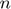
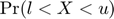
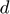
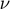
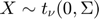
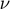
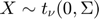
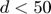
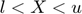
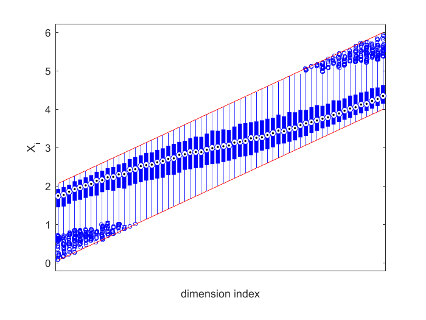

Truncated Multivariate Student Toolbox
Main functions in this toolbox include.
- mvTcdf(l,u,Sig,nu,n), which uses a Monte Carlo sample of size  to estimate the cumulative distribution function, , of the -dimensional multivariate student with zero-mean and covariance
 and degrees of freedom , that is, ;
and degrees of freedom , that is, ; - mvTqmc(l,u,Sig,nu,n) provides a Quasi Monte Carlo algorithm for medium dimensions (say, ), in addition to the faster Monte Carlo algorithm in mvTcdf;
- mvrandt(l,u,Sig,nu,n) simulates random vectors , conditional on ;
Reference: Z. I. Botev (2015), The Normal Law Under Linear Restrictions: Simulation and Estimation via Minimax Tilting, submitted to JRSS(B)
Contents
mvTcdf(l,u,Sig,nu,n) - multivariate student cumulative distribution
- Comparison with Matlab's default routine
d=20;l=ones(d,1)/2;u=ones(d,1);df=400;Sig=inv(0.5*eye(d)+.5*ones(d,d));
est=mvTcdf(l,u,Sig,df,10^4) % output of our method
est =
prob: 1.7841e-37
relErr: 0.0048
upbnd: 2.8537e-37
Now execute Matlab's toolbox\stats\stats\mvtcdf.m and verify that with n=10^6 it is slow and inaccurate.
options=optimset('TolFun',0,'MaxFunEvals',10^6,'Display','iter'); [prob,err]=mvtcdf(l,u,Sig,df,options)
estimate error estimate function evaluations --------------------------------------------------- 2.9028e-49 7.98495e-49 8650 3.0126e-50 9.24460e-50 21800 3.0979e-50 9.24224e-50 41650 3.6333e-50 9.18243e-50 71300 3.7982e-50 9.17764e-50 116650 4.0172e-50 9.16803e-50 184700 4.1066e-50 9.16629e-50 287350 4.1362e-50 9.16598e-50 441300 5.5035e-50 9.07403e-50 672350 Warning: Unable to achieve error tolerance of 0 in 1000000 function evaluations. Increase the maximum number of function evaluations, or the error tolerance. prob = 5.5035e-50 err = 9.0740e-50
mvTqmc(l,u,Sig,df,n) - multivariate student cumulative distribution (Quasi Monte Carlo)
Compare errors using pseudo-random and quasi-random implementation for small to medium .
est=mvTqmc(l,u,Sig,df,10^4) % QMC version est=mvTcdf(l,u,Sig,df,10^4) % ordinary Monte Carlo version
est =
prob: 1.7813e-37
relErr: 5.0162e-04
upbnd: 2.8537e-37
est =
prob: 1.7808e-37
relErr: 0.0048
upbnd: 2.8537e-37
mvrandn(l,u,Sig,n) - truncated multivariate normal generator
- Large-scale example with strong positive correlation.
d=60;n=10^3; Sig=0.9*ones(d,d)+.1*eye(d); l=(1:d)/d*4;u=l+2; df=10; X=mvrandt(l,u,Sig,df,n);
Plot the boxplots of the -marginal distributions together with their truncation limits.
boxplot(X','plotstyle','compact'),set(gca,'XTickLabel',{''}), xlabel('dimension index'),ylabel('X_i'),hold on, plot(1:d,l,'r',1:d,u,'r')